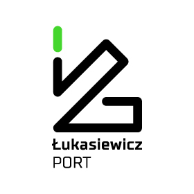
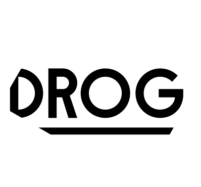

Engagement & Collaboration
Explore our calendar of upcoming events, webinars, and workshops. Discover detailed profiles of our partners and learn how to collaborate with SAUFEX. Read success stories from our partnerships, engage through surveys and focus groups, and stay informed about policy roundtables and briefings.
Events & Webinars
A calendar of all upcoming events, including public webinars, workshops
Partners and Collaborations
PORT
FAKTABAARI
DROG
DEBUNK
ISP PAN
UNIWARSAW
MIA
Detailed profiles of all partner organisations, including their role in SAUFEX.
PORT Łukasiewicz - the Polish Center for Technology Development is a leading research and development organization focused on advancing scientific innovation and technology in Poland. As part of the Łukasiewicz Research Network, PORT specializes in cutting-edge research across various fields, including biotechnology, material sciences, and digital technologies. The center's mission is to bridge the gap between scientific research and industry, fostering collaboration and driving technological advancements that benefit society. With state-of-the-art facilities and a team of top-tier scientists, PORT Łukasiewicz is at the forefront of technological progress in Poland.
Faktabaari (FactBar) is a Finnish fact-checking service dedicated to promoting accurate information and combating misinformation in public discourse. Established to support democratic processes and informed decision-making, Faktabaari provides reliable, evidence-based fact-checks on a wide range of topics. The organization engages with the public through educational initiatives and collaborations, helping individuals develop critical thinking skills and media literacy. Faktabaari's mission is to ensure that truth prevails in the face of misinformation, enhancing the quality of public debate in Finland.
DROG is a leading organisation in the fight against disinformation, specialising in the development of innovative educational tools and strategies to build resilience against fake news. With a team of experts in media, psychology, and education, DROG creates interactive experiences that empower individuals to recognise and resist manipulation. Their unique approach, which includes games and workshops, is designed to make learning about disinformation both engaging and effective. DROG's mission is to equip people with the skills needed to navigate the complex media landscape of today.
Debunk.org is a pioneering organisation dedicated to identifying, analysing, and combating disinformation across Europe. Founded to protect the integrity of public discourse, DebunkEU.org brings together experts in media, data analysis, and journalism to provide timely, accurate, and reliable information. The organisation's mission is to expose false narratives and educate the public on recognising and resisting disinformation. Through cutting-edge tools and collaborative efforts, Debunk.org plays a crucial role in safeguarding democratic values and promoting informed decision-making.
The Institute of Political Studies of the Polish Academy of Sciences (ISPPAN) was established in 1990 to foster innovative research at the intersection of East and West. Bringing together leading Polish political scientists, historians, and sociologists, ISPPAN is dedicated to high-level multidisciplinary studies that explore political and social changes. The Institute's research spans the study of post-communist societies, political transformation, and Poland's historical relations with Germany, Russia, and Ukraine. Additionally, ISPPAN addresses regional and global political shifts, focusing on international security, European integration, and East Asia.
The University of Warsaw is Poland's largest and most prestigious university, renowned for its excellence in education and research. Founded in 1816, the university offers a wide range of programs across various disciplines, attracting top students and scholars from around the world. With a commitment to fostering innovation and critical thinking, the University of Warsaw combines a rich academic tradition with cutting-edge research to address global challenges. The university is a vibrant intellectual hub, playing a key role in shaping the future of education and research in Poland and beyond.
 - https://port.org.pl/
- https://faktabaari.fi/
- https://drog.group/
- https://debunk.org/
- https://politic.edu.pl/
- https://www.uw.edu.pl/
- Link 1
Partner up?
Partners
Becoming a partner
You can actively become part of our defender community, or you can become involved in shaping your national resilience council. Or, if you just want to support our work... please drop us a note.
Defender Community
A current list of listed organisations in the defender community connected to SAUFEX
- Debunk.eu
- Faktabaari
- Osavul
EU Resilience councils
A current list of Resilience Councils and contact points. Partner up with us to get a head start in setting up your own.
Want to publish with Saufex?
Editorial Guidelines for Article Submissions
Welcome to our platform! We value diverse perspectives and encourage submissions that reflect the unique insights of our contributors. To ensure high-quality, respectful, and meaningful content, please follow these guidelines when preparing your article:
1. Authentic Representation of Views
- Articles must reflect the personal views, research, and opinions of the author(s).
- Collaborative submissions are welcome, but the views should remain those of the contributing authors, not organizations or external groups.
2. Content Standards
- Originality: Content must be original and not previously published elsewhere. Plagiarism will not be tolerated.
- Accuracy: Facts and data should be accurate and properly sourced. Include citations or hyperlinks for references.
- Clarity: Write in a clear, concise, and engaging style. Avoid jargon and overly technical language unless necessary for the topic.
3. Submission Requirements
- Length: Articles should typically range between 800 and 1,500 words, though exceptions may be made for in-depth pieces.
- Format: Submit articles in standard formats such as .docx or .txt, with any accompanying images as separate files.
- Author Bio: Include a short bio (2-3 sentences) and a headshot (optional).
4. Ethical Considerations
- Respect for Others: Articles must not contain hate speech, personal attacks, or defamatory content.
-Disclosure of Interests: Authors should disclose any affiliations, financial interests, or conflicts of interest relevant to the article.
5. Rights and Ownership
- Authors retain ownership of their work but grant the website non-exclusive rights to publish and promote the content.
- Authors may republish their articles elsewhere after publication on our platform, provided they credit our website as the original source.
6. Review and Editing Process
- All submissions will be reviewed by our editorial team. While we strive to preserve the author's voice, minor edits may be made for grammar, style, or clarity.
- The editorial team may request revisions or reject articles that do not meet the guidelines.
7. Disclaimer of Views
- The views expressed in published articles are solely those of the authors and do not necessarily reflect the opinions or positions of the website or its editorial team.
8. How to Submit
Send your submissions to [email/contact form]. Use the subject line: "Article Submission – [Title of Article]".
We look forward to your contributions and thank you for sharing your voice with our community!
These guidelines ensure that all submissions meet the platform's standards while promoting a diversity of perspectives.
Quick Reference
Stabłowicka 147 Street
54-066 Wrocław
Alexanderveld 5
2516 BE The Hague
Netherlands
European Union does not accept liability for any damages resulting from visiting the website, using the services or software it contains, using the information ...
This license enables reusers to distribute, remix, adapt, and build upon the material on this website in any medium or format for noncommercial purposes only, and only so long as attribution is given to the creator. If you remix, adapt, or build upon the material, you must license the modified material under identical terms.
Learn how SAUFEX collects, uses, and protects your personal data. This policy explains our use of cookies, data sharing practices, user rights under GDPR, and the measures we take to ensure data security. Stay informed about how your data is managed and your options for control Click here


- Home
- Engagement & Collaboration
- Research & Resources
- Impact & Outreach
- About & Contact
- API Docs